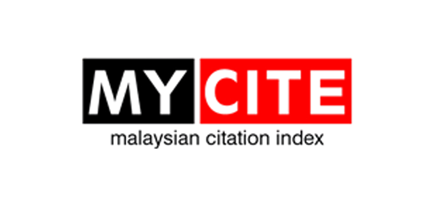
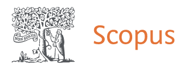

Academic submission
Paper submission.
Researchers, academics, postgraduate students, policymakers, diplomats and industry practitioners are invited to submit original, unpublished papers that contribute to a sustainable, innovative and inclusive future.
Conference theme
Harnessing AI, Empowering Innovation, Advancing Sustainable Futures Through Entrepreneurship and Diplomacy.
Submission details
What may be submitted.
Original conceptual contributions connected to AI, sustainability, entrepreneurship and diplomacy.
Evidence-based research, data-informed findings and applied academic studies.
Practical examples from organisations, communities, institutions, industries and public-sector settings.
Policy-oriented work on governance, ethics, regulation, diplomacy and public impact.
Industry-led insights, technology applications and innovation ecosystem practices.
Practice-based work with lessons, frameworks, models and implementation outcomes.
Guidelines
Submission guidelines.
Abstract submissions are due by 15 August 2026.
Committee Reviewer notification before 29 August 2026.
Full paper submission deadline is 30 October 2026.
Abstracts should be between 250 - 300 words.
Full papers should be between 4,000 - 6,000 words.
Papers must be written in English.
All submissions must be original, unpublished and not under consideration elsewhere.
Use APA referencing style.
Submissions will undergo peer review and editorial evaluation.
Publication opportunities
Selected papers will be considered for publication.
All submissions will be reviewed before publication consideration.

MyCITE-indexed publicationSelected papers may be considered for MyCITE-indexed publication opportunities.

SCOPUS publicationSelected papers may be considered for SCOPUS publication opportunities.
Important dates
Submission timeline.
Abstract submissions are due for initial review.
Committee Reviewer notification before 29 August 2026.
Accepted authors submit the completed paper before the final deadline.
Participation fee
Academic paper categories.
Presenter
RM 700Non-presenter
Presenter
RM 350Non-presenter
HRD Corp Claimable / General Admission / Government Agencies
2-day conference participation
30% fee waiver for online presentation presenters.
Submit paper
Ready to submit?
Continue to the registration portal and choose Call for Papers to complete your submission route.
Call for Papers registration
Academics and postgraduate students can proceed through the guided registration flow.